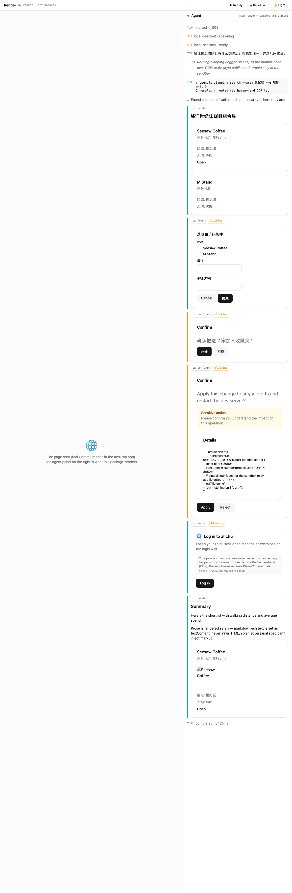

All four QA-brief milestones are functionally real and verified. The codex agent streams a genuine
turn through the seatbelt sandbox; the UX panel renders all four message types from a scripted stream; the
Electron shell opens, browses a real example.com tab, and its CDP human-hand attaches and
round-trips document.title. M3 (opencli-router) landed during this session and its smoke also
returns real arXiv data through the sandbox.
The one honest gap is integration: apps/desktop still emits events from the
agent-stub (TODO(bridge)) and imports neither @render/agent-bridge nor
@render/opencli-router. The pieces are real and individually proven, but the spine is not yet
wired into the shell. (* E4: functional proofs all pass; a GUI pixel
screenshot of the Electron chrome could not be saved from this terminal — macOS screen-recording permission
denied — so the cdp-selftest log + live relay endpoints are the evidence, as the brief permits.)
$ pnpm install
Scope: all 8 workspace projects
Lockfile is up to date, resolution step is skipped
Already up to date · Done in 479ms
tsc --noEmit exit codes (0 = clean, no errors emitted)| Package | Result | Package | Result |
|---|---|---|---|
| @render/protocol | exit 0 | @render/cdp-human-hand | exit 0 |
| @render/sandbox | exit 0 | @render/ux-render | exit 0 |
| @render/agent-bridge | exit 0 | @render/opencli-router | exit 0 |
| @render/desktop (node+web) | exit 0 | 3,701 LOC of real TS/TSX across packages + app | |
All seven workspace TS projects + the desktop's two tsconfigs compile with zero errors.
app-server inside the local-seatbelt SandboxProvider and runs one real turn$ NO_PROXY=127.0.0.1,localhost pnpm --filter @render/agent-bridge smoke "say hello in 3 words"
{
"ok": true,
"provider": "local-seatbelt",
"prompt": "say hello in 3 words",
"model": "gpt-5.4",
"modelProvider": "OpenAI",
"threadId": "019eec92-6128-7ec2-8181-29e607b9b601",
"turnId": "019eec92-624d-7b93-90cc-f70125f971d4",
"turnStatus": "completed",
"agentText": "Hello, nice day.",
"eventKinds": { "sandbox":2, "turn_started":1, "item":6, "delta":5, "turn_completed":1 }
}
[smoke] sandbox: local-seatbelt (no E2B_API_KEY) → local-seatbelt [event] sandbox.spawning (local-seatbelt) [event] sandbox.ready (local-seatbelt) [event] turn_started 019eec92-624d-7b93-90cc-f70125f971d4 [event] item.started userMessage → item.completed userMessage [event] item.started reasoning → item.completed reasoning [event] item.started agentMessage Hello, nice day. [event] item.completed agentMessage [event] turn_completed completed (5849ms)
Why this is real, not a mock: a fresh codex thread/turn UUID, the live model
gpt-5.4 via the configured OpenAI provider, a 3-word reply produced over 5 streamed deltas, and
turn_completed in 5.8s. The sandbox layer is genuine — local-seatbelt.ts wraps
one-shot commands in macOS sandbox-exec with a workspace-write profile; the brain spawns in the
jail and codex creates its own seatbelt children per command.
e2b path: pnpm --filter @render/sandbox test:e2b correctly prints
SKIP: E2B_API_KEY not set (guarded test, no key on this box) — the seam exists and compiles.
$ pnpm --filter @render/ux-render build
vite v6.4.3 · ✓ 1925 modules transformed
dist/assets/index-*.js 632.87 kB │ gzip: 189.59 kB ✓ built in 1.89s
pnpm --filter @render/ux-render dev replaying the scripted AgentEvent stream, captured headless at full panel height:
All four UxMessage kinds render from the scripted stream, plus the non-ux event feed:
| Surface | Evidence in capture |
|---|---|
| ux render (non-blocking) | 钱江世纪城 咖啡店合集 + Summary cards (Seesaw Coffee / M Stand, fields, image, Open link) |
| ux form (blocking) | 选项 / 半径(km) inputs with Cancel + 提交 buttons |
| ux confirm (blocking) | 确认把这2家加入收藏夹? → 允许 / 拒绝 |
| ux confirm + danger + diff | "Sensitive action" Alert + unified-diff Details + Apply / Reject |
| login (Plane-2) | Log in to zhihu — security note: "the sandbox never sees Plane-2 credentials" ✓ |
| event feed | turn_started, sandbox spawning/ready, userMessage, reasoning, commandExecution, delta, turn_completed · 8421ms |
The login card shows the required Plane-2 security note. Prose is rendered safely
(textContent, never innerHTML) per the panel's own annotation — structure is the injection boundary.
Fresh QA artifact written to packages/ux-render/screenshots/qa-all-surfaces.png.
$ pnpm --filter @render/desktop dev
build the electron main process successfully
build the electron preload files successfully
dev server running for the electron renderer process at http://localhost:5173/
start electron app...
[render] CDP relay listening at ws://127.0.0.1:53419
[render] CDP self-test OK — example.com document.title = "Example Domain"
$ curl --noproxy '*' http://127.0.0.1:53419/json/list [{"id":"tab-1","type":"page","title":"Example Domain","url":"https://example.com/", "webSocketDebuggerUrl":"ws://127.0.0.1:53419?tabId=tab-1"}, {"id":"tab-2","type":"page","title":"Example Domain","url":"https://example.com/", ...}] $ curl .../json/version → {"Browser":"Render/0.1 (human-hand relay)","Protocol-Version":"1.3", ...} $ curl .../health → {"ok":true}
| Brief requirement | Verdict | Evidence |
|---|---|---|
| A window opens | PASS | app starts; relay + self-test fire on the chrome's did-finish-load |
| Browses a real URL in a WebContentsView tab | PASS | two live example.com page targets in /json/list |
CDP attach + document.title round-trips | PASS | document.title = "Example Domain" via Runtime.evaluate |
| Floating input + right agent panel render | PASS | chrome renderer loaded (self-test is gated on it); FloatingInput.tsx, AgentPanel.tsx mounted in App.tsx |
| GUI pixel screenshot of the chrome | N/A | macOS screen-recording permission denied to the terminal → screencapture returns black; cdp-selftest log used instead (brief-permitted) |
Note: the chrome renderer hard-depends on the window.render preload bridge. Loading
localhost:5173 in a plain browser (no preload) white-screens with
TypeError: Cannot read properties of undefined (reading 'getState') at
useRenderState.ts:12 — confirming the renderer is correctly IPC-only, but also that there is no
error boundary (punch-list #3). Inside Electron the bridge is present and the self-test running proves the
chrome mounted cleanly.
apps/desktop/src/main/index.ts wires createAgentStub(...) — the
TODO(bridge) fake AgentEvent producer. A grep across apps/desktop/src finds
no import of @render/agent-bridge nor @render/opencli-router (only comments
referencing the future swap). The IPC shapes match protocol/src/ipc.ts exactly, so the swap is
designed to be drop-in — but as of 8bde4fc it has not happened.
$ grep -rn "agent-bridge|opencli-router" apps/desktop/src
agent-stub.ts:5: * TODO(bridge): Worker Sandbox / Worker Bridge own packages/agent-bridge ...
preload/index.ts:4: * never reach codex / opencli / CDP except through these channels.
→ NEITHER agent-bridge NOR opencli-router imported in apps/desktop (stub-only seam)
Seam status for M3/integration follow-up:
createAgentStub → an AgentSession from @render/agent-bridge bound to a SandboxProvider; forward onServerRequest → ux AgentEvents and resolveUx → resolvePending.@render/opencli-router exists and its smoke passes, but it is not exposed over IPC to the agent/renderer yet (no app-hand route in ipc.ts). HumanHand.cdpEndpoint() is the relay the router targets for browser/cookie commands.
Not in the QA brief's five evals, but the package landed mid-session (HEAD advanced
10d7fc6 → 8bde4fc; opencli-router went from an empty stub to 12 files). Re-verified
for real since the repo changed under evaluation.
$ pnpm --filter @render/opencli-router smoke
1. classify (real `opencli list` metadata, 1231 commands cached):
arxiv search → public · 12306 me → cookie · zhihu hot → cookie
2. public adapter via sandbox → opencli arxiv search (REAL):
ok=true strategy=public ranOn=sandbox
• 2025-06-08 AR-RAG: Autoregressive Retrieval Augmentation for Image Generation
• 2025-04-18 Intelligent Interaction Strategies for Context-Aware Cognitive ...
• 2025-04-24 Factually: Exploring Wearable Fact-Checking ...
↳ 3 real papers returned from arXiv
3. browser route (cdp-human-hand relay wiring):
OPENCLI_CDP_ENDPOINT → http://127.0.0.1:54406
invoke 12306 me → ok=false ranOn=cdp-human-hand · needsLogin site=12306 loginUrl=https://kyfw.12306.cn
✅ SMOKE PASS — real public data + browser-route wiring verified
Real arXiv results through the sandbox; the browser route returns a clean
needsLogin (no crash) and wires OPENCLI_CDP_ENDPOINT to the live relay.
apps/desktop — replace agent-stub with @render/agent-bridge's AgentSession over a SandboxProvider. The shapes already match; this is the headline remaining work to make Render an actual agent browser rather than a shell + a separately-proven engine.@render/opencli-router over IPC and let the agent route app-hand commands; connect its browser/cookie path to HumanHand.cdpEndpoint() and surface needsLogin as a login UxMessage in the panel.window.render bridge white-screens the whole app (useRenderState.ts:12). Add an error boundary / null-guard so a transient preload gap degrades gracefully.manualChunks / dynamic import of the @json-render catalog for the embeddable panel.8bde4fc; treat any stale "DONE"/memory claim as a hypothesis to re-verify.